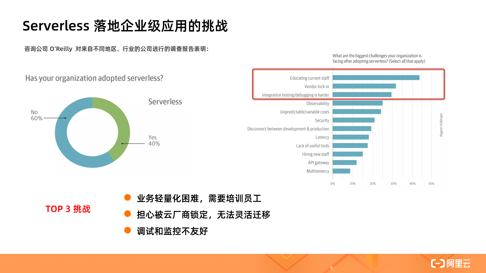
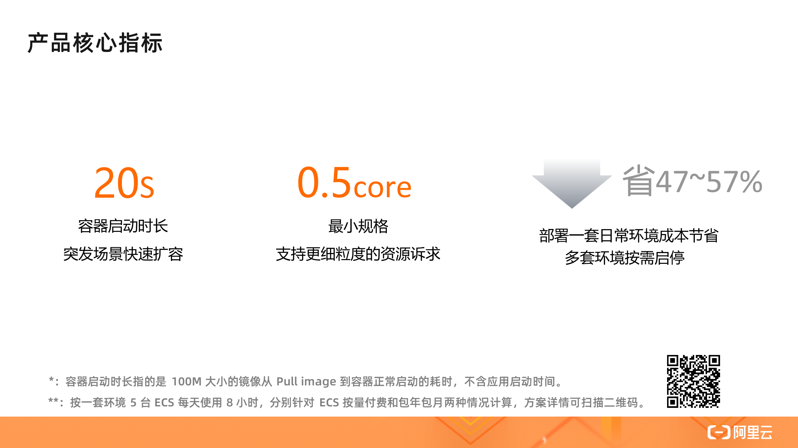
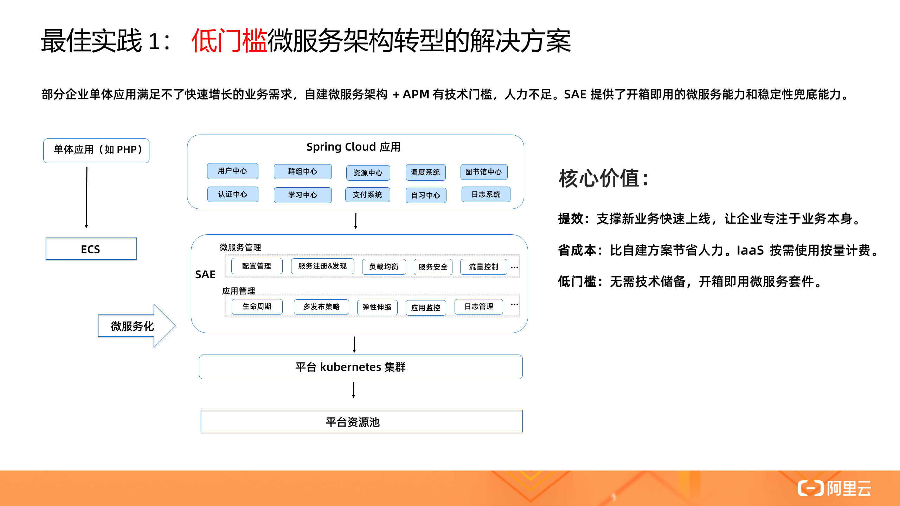
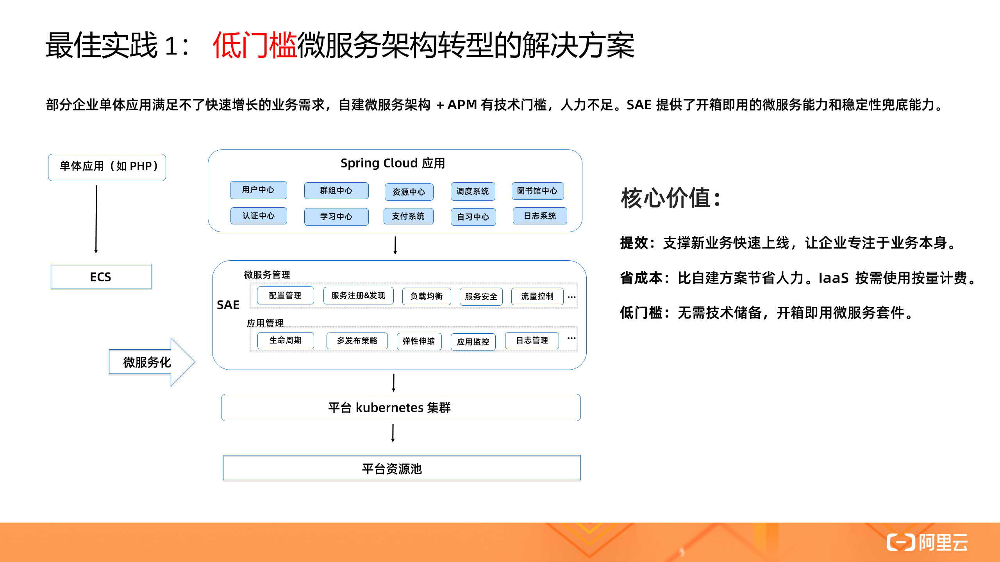
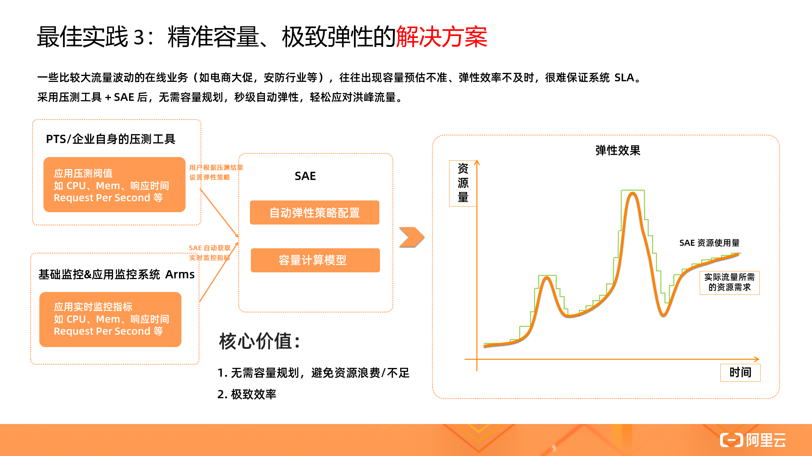
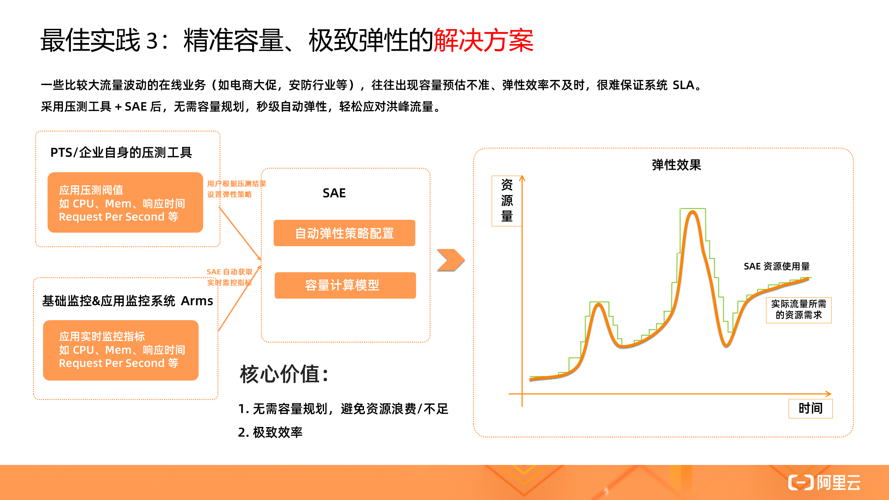

- 01 架构的演进.md
- 02 Serverless 的价值.md
- 03 常见 Serverless 架构模式.md
- 04 Serverless 技术选型.md
- 05 函数计算简介.md
- 06 函数计算是如何工作的？.md
- 07 函数粘合云服务提供端到端解决方案.md
- 08 函数计算的开发与配置.md
- 09 函数的调试与部署.md
- 10 自动化 CI&CD 与灰度发布.md
- 11 函数计算的可观测性.md
- 12 典型案例 1：函数计算在音视频场景实践.md
- 13 典型案例 3：十分钟搭建弹性可扩展的 Web API.md
- 14 Serverless Kubernetes 容器服务介绍.md
- 15 Serverless Kubernetes 应用部署及扩缩容.md
- 16 使用 Spot 低成本运行 Job 任务.md
- 17 低成本运行 Spark 数据计算.md
- 18 GPU 机器学习开箱即用.md
- 19 基于 Knative 低成本部署在线应用，灵活自动伸缩.md
- 20 快速构建 JenkinsGitlab 持续集成环境.md
- 21 在线应用的 Serverless 实践.md
- 22 通过 IDEMaven 部署 Serverless 应用实践.md
- 23 企业级 CICD 工具部署 Serverless 应用的落地实践.md
- 24 Serverless 应用如何管理日志&持久化数据.md
- 25 Serverless 应用引擎产品的流量负载均衡和路由策略配置实践.md
- 26 Spring CloudDubbo 应用无缝迁移到 Serverless 架构.md
- 27 SAE 应用分批发布与无损下线的最佳实践.md
- 28 如何通过压测工具+ SAE 弹性能力轻松应对大促.md
- 29 SAE 极致应用部署效率.md
21 在线应用的 Serverless 实践
Serverless 落地企业级应用的挑战

Serverless 技术是继虚拟机、容器之后的第三代通用计算技术。相对于传统后台架构，Serverless 具有免运维、省成本、快速部署交付、灵活弹性等优点，近年来获得越来越多企业和开发者的关注和青睐。但对于企业级应用落地来说，仍存在一些挑战。
根据咨询公司 O ‘Reilly 2019 年底的一份统计报告表明：已有 40% 的组织正在使用 Serverless 技术，剩下的 60% 中认为最大的 TOP 3 挑战是：
- 开发难度和入门门槛高，业务轻量化困难，不能平滑地迁移现有应用 ；
- 担心被云厂商锁定，如 FaaS 形态的 Serverless 产品，每个厂商都希望推出自己的标准，缺乏开源的规范和开源的生态支持。相似的一幕曾经在容器领域上演，直到后来 Kubernetes 成为事实标准，Serverless 还在寻找自己的事实标准；
- 如何方便地本地开发调试、监控，和现有业务做深度整合。
SAE 产品介绍
那么摆在 Serverless 技术落地面前的三座大山该如何解决呢？给大家分享一款低门槛，无需任何代码改造就能直接使用的 Serverless PaaS 平台（SAE），是企业在线业务平滑上云的最佳选择。

SAE 提供了成本更优、效率更高的应用托管方案。底层基于统一的 K8s 技术底座，帮用户屏蔽复杂的 IaaS 层和 K8s 集群运维，提供计算资源、弹性、隔离性等能力，用户只需关心应用实例的规格和实例数。
在应用层，除提供了生命周期管理、多发布策略外，还提供监控、日志、微服务治理能力，解决应用可观测性和治理需求。同时提供一键启停、应用编排等高级能力，进一步提效和降本。核心场景主要面向在线应用：微服务应用、Web 应用、多语言应用等。
在开发者工具方面，和 CI/CD 工具做了良好的集成，无论是 Jenkins 还是云效，都能直接部署应用到 SAE，也可以通过 Cloud Toolkit 插件工具实现本地一键部署应用到云端，可以说 SAE 覆盖了应用上云的完整场景。


SAE 除了 Serverless 体验本身所带来的极致弹性、免运维、省成本等特性之外，重点在应用层给用户提供了全栈的能力，包括对微服务的增强支持，以及整合了和应用息息相关能力，包括配置、监控、日志、流量控制等。再加上用户零代码的改造，这也是 SAE 区别其它 Serveless 产品的重要优势，平滑迁移企业在线应用。

SAE 有几个典型的使用场景：一个是存量业务上云，特别是微服务、Java 应用，同时也支持其他语言的单体应用快速上云/搬站，满足极致交付效率和开箱即用的一站式体验。在行业方面，SAE 特别适合有比较大的流量波动的在线业务，比如电商大促、在线教育等行业的场景。另外 SAE 作为应用 PaaS 也可以被上层的行业 SaaS 所集成，帮助用户更快地构建行业 SaaS。
产品核心指标

SAE 三个核心的指标：容器启动时长 20s（指标定义是从 pull image 到容器启动的耗时，不包括应用启动时间），接下来我们会通过各种技术优化把它优化到 5s 内，保证用户在突发场景下的快速扩容效率。最小规格支持 0.5core 1GiB，满足更细粒度的资源诉求。相比 ECS，SAE 部署一套开发测试环境的成本可以节省 47%～57%。
最佳实践
通过前文介绍， 我们了解了产品的特性、优势、适用场景，最后给大家详细介绍几个 Serverless 落地的最佳实践案例。
1. 低门槛微服务架构转型的解决方案
 

随着业务的快速增长，很多企业都面临单体向微服务架构改造转型的难题，或者开源自建的微服务框架（Spring Cloud / Dubbo）能力不再能满足企业稳定性和多样化的需求。通过 SAE 提供开箱即用的微服务能力和稳定性兜底能力，已让这些企业低门槛快速完成微服务架构转型，支撑新业务快速上线，让企业专注于业务本身。
可以说，SAE 是 Serverless 行业最佳的微服务实践，同时也是微服务行业最佳的 Serverless 实践。
2. 免运维、一键启停开发测试环境的降本方案


中大型企业多套环境，往往开发测试、预发环境都不是 7*24 小时使用，长期保有应用实例，闲置浪费很高，有些企业 CPU 利用率都快接近 0，降本诉求明显。通过 SAE 一键启停能力，让这些企业得以灵活按需释放资源，只开发测试环境就能节省 2/3 的机器成本，非常可观。
3. 精准容量、极致弹性的解决方案
 

电商类、安防行业等往往会有一些不可预期的突发流量高峰，之前他们都是提前预估峰值，按照峰值保有 ECS 资源，但经常出现容量预估不准（资源浪费 or 不足），更严重的甚至会影响系统的 SLA。
采用压测工具 + SAE 的方案后，根据压测结果精准设置弹性策略期望值，然后和实时的监控指标比对，系统自动进行扩缩操作，再也无需容量规划，并且弹性效率能做到秒级，轻松应对峰值大考。
4. 构建高效闭环的 DevOps 体系

SAE 构建了高效闭环的 DevOps 体系，覆盖了应用的开发态、部署态、运维态的整个过程。中大型企业往往都使用企业级 CI/CD 工具 Jenkis / 云效部署 SAE 应用，完成从 Source Code - 构建 - 部署全链路。中小企业/个人开发者往往选择开发者工具 Maven 插件、IDEA 插件一键部署应用到云端，方便本地调试，提升开发者体验。完成部署后，即可进行运维态的治理和诊断，如限流降级、应用诊断，数据化运营分析等。
总结
总结一下，本文主要是围绕在线应用的 Serverless 落地实践展开的。开篇提到的几个落地挑战在 SAE 产品中基本都能得到很好的解决：
- 不用修改编程模型，零代码改造，对开发者来说零门槛平滑迁移企业存量应用；
- 底座基于 K8s（容器界的事实标准），上层提供的应用层全栈能力对用户零侵入，因此不用担心厂商锁定问题，而是让用户更关注应用视角，获得一站式 PaaS 层的体验；
- 调试、监控、可观测性方面，SAE 和开发者工具做了良好的集成打通，接下来会越来越逼近开发者熟知的 ECS 运维体验。总体来讲，SAE 是企业在线业务平滑上云的最佳选择。